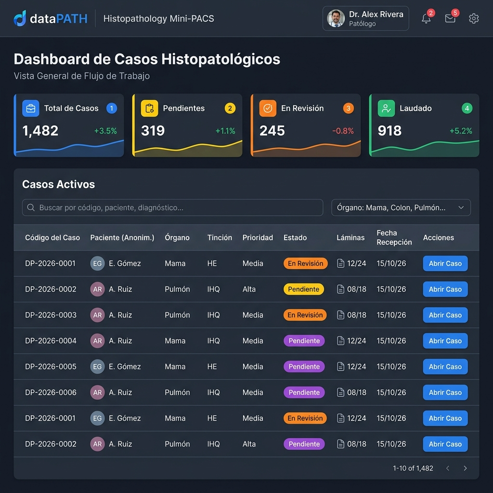
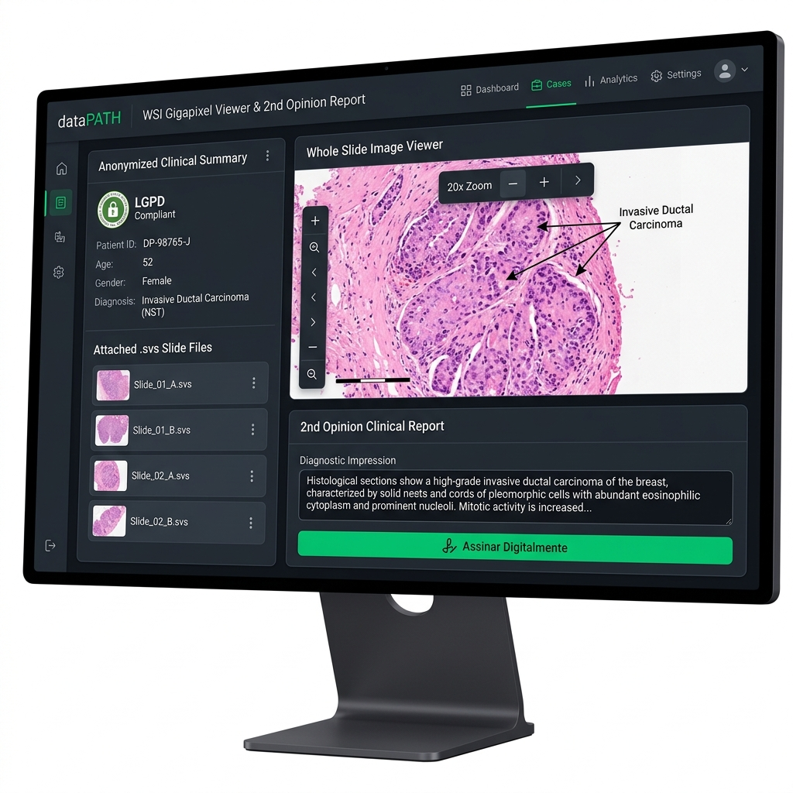
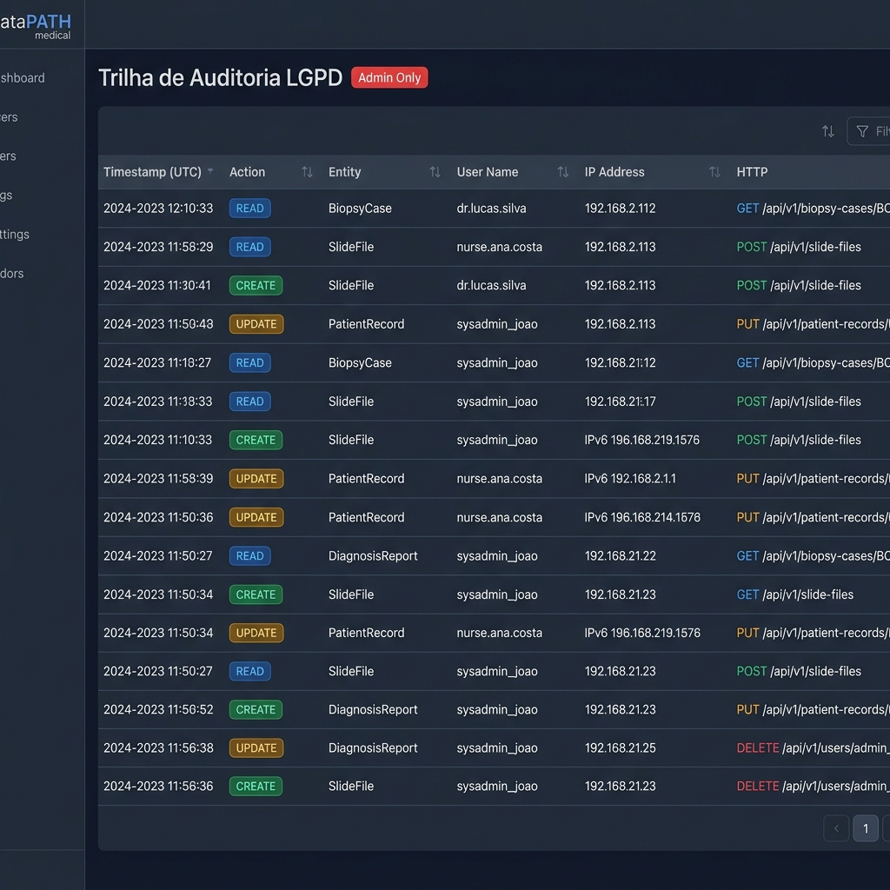

O dataPATH possibilita a publicação e o compartilhamento de lâminas histopatológicas em altíssima resolução (WSI — Gigapixel) para emissão assíncrona de pareceres médicos de 2ª opinião, operando em conformidade estrita com a LGPD (Lei nº 13.709/2018).
| Perfil | Senha | Escopo de Permissões | |
|---|---|---|---|
| Técnico de Laboratório | maria.silva@datapath.local |
DataPath@2026 |
Cadastro de casos clínicos e upload de lâminas WSI. |
| Médico Patologista | carlos.mendes@datapath.local |
DataPath@2026 |
Análise WSI, emissão e assinatura de pareceres diagnósticos. |
| Administrador | admin@datapath.local |
DataPath@2026 |
Acesso total, governança e auditoria LGPD. |
Acesse o sistema via navegador. Para facilitar os testes em ambiente de desenvolvimento, utilize os botões de atalho rápido para preencher as credenciais desejadas.
Painel principal com indicadores quantitativos (Total, Pendentes, Em Revisão, Laudados), busca por texto livre, filtros por órgão/status e ações rápidas.

Interface médica com visualizador zoomable de tecido microscópico, resumo da anamnese anonimizada e formulário para emissão e assinatura do laudo final.

Trilha de auditoria em tempo real exclusiva para perfil Admin, registrando carimbo de data/hora (UTC), endereço IP, ação executada e identificadores.
